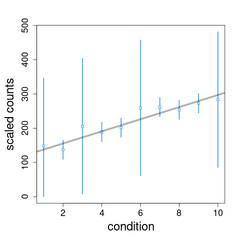
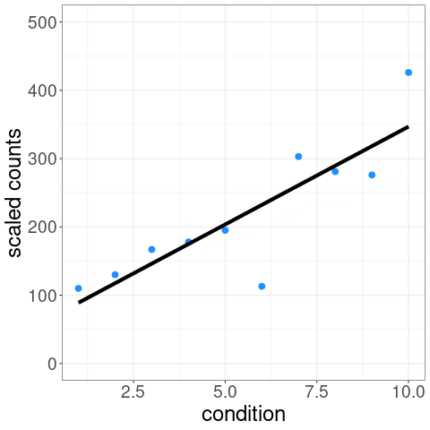

Fishpond: downstream methods and tools for expression data
Fishpond contains a method, swish(), for differential transcript and gene expression analysis of RNA-seq data using inferential replicates. Also the package contains utilities for working with Salmon, alevin, and alevin-fry quantification data, including loadFry().
Quick start
The following paradigm is used for running a Swish analysis:
y <- tximeta(coldata) # reads in counts and inf reps
y <- scaleInfReps(y) # scales counts
y <- labelKeep(y) # labels features to keep
set.seed(1)
y <- swish(y, x="condition") # simplest Swish caseHow does Swish work
Swish accounts for inferential uncertainty in expression estimates by averaging test statistics over a number of inferential replicate datasets, either posterior samples or bootstrap samples. This is inspired by a method called SAMseq, hence we named our method Swish, for “SAMseq With Inferential Samples Helps”. Averaging over inferential replicates produces a different test statistic than what one would obtain using only point estimates for expression level.
For example, one of the tests possible with swish() is a correlation test of expression level over a condition variable. We can visualize the distribution of inferential replicates with plotInfReps():

The test statistic is formed by averaging over these sets of data:

p-values and q-values are computed through permutation of samples (see vignette for details on permutation schemes). The Swish method is described in the following publication:
Zhu, A., Srivastava, A., Ibrahim, J.G., Patro, R., Love, M.I. “Nonparametric expression analysis using inferential replicate counts” Nucleic Acids Research (2019) 47(18):e105 PMC6765120
Software issues and support
You can browse the code or submit an Issue at the following link:
https://github.com/mikelove/fishpond
For software support please use the following link and tag with swish or fishpond: